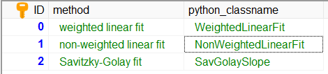

Provide an additional user-selectable algorithm subsystem¶
An example of user-selectable algorithm subsystems is the method for the calculation of the signal slope in the extinction retrieval. It is described here .
There are two algorithms already available, but the developer might want to add another option
Savitzky-Golay fit
Step 1¶
In a first step, the new method needs to be added in the SCC database table _ext_methods.
Step 2¶
Next, you need to add a new module ELDAmwl.plugins.SavitzkyGolaySlope
in the directory ELDAmwl.plugins.
In this module, you can create and register a new class with the name that
was provided in the database table.
# -*- coding: utf-8 -*-
"""plugin for calculation of slope with Savitzky-Golay method"""
from ELDAmwl.extinction_factories import SignalSlope
from ELDAmwl.factory import BaseOperation
from ELDAmwl.registry import registry
class SavGolaySlope(BaseOperation):
name = 'SavGolaySlope'
def __init__(self, **kwargs):
print('create SavGolaySlope ')
def run(self, **kwargs):
print('run SavGolaySlope ')
registry.register_class(SignalSlope,
SavGolaySlope.__name__,
SavGolaySlope)
Note
The new class needs to have a name attribute, as well as __init__() and run() methods which accepts keyword arguments.
Step 3¶
In a last step, the new module needs to be announced to the ELDAmwl package.
This is done by adding an import statement into the ELDAmwl.plugins.plugin module.
# -*- coding: utf-8 -*-
"""import of all plugins"""
import ELDAmwl.plugins.SavitzkyGolaySlope